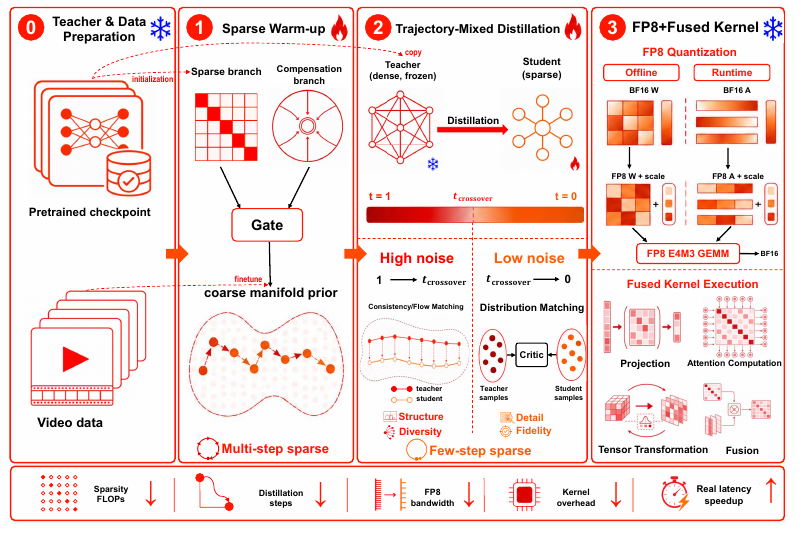
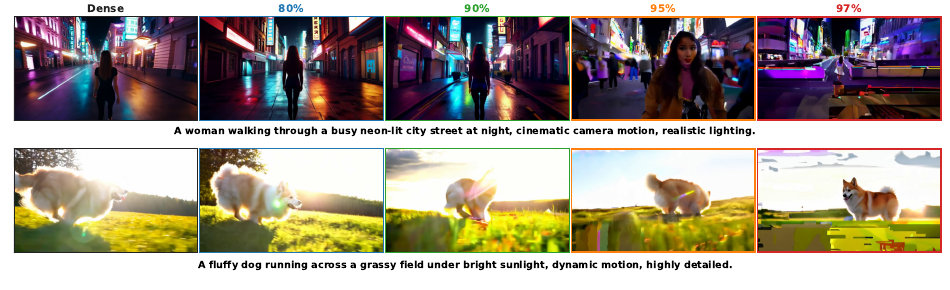
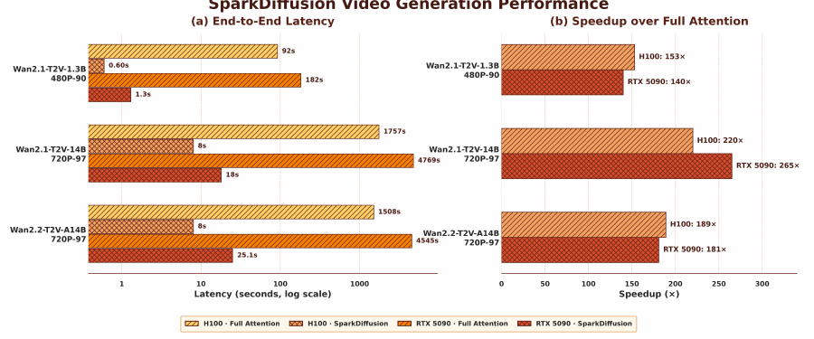

SparkDiffusion：识别「高稀疏陷阱」，把视频扩散在单卡上加速 265×

问题
视频扩散推理成本被长时空注意力主导。补偿式稀疏注意力能到 90%，但 95%/97% 处出现「训练损失在降、生成质量在崩」的诡异现象。
诊断
high-sparsity trap：终端误差主要在高噪声结构生成阶段被注入。step-local 监督（flow matching）看不见它，terminal-aligned 监督能修它。
配方
三阶段：稀疏预热（粗先验）→ trajectory-mixed 蒸馏（PCM 锚高噪声 + DMD 补低噪声，3 步）→ FP8 W8A8 + 融合 kernel。
结果
Wan2.1-T2V-14B-720P：RTX 5090 端到端 265×、H100 220×；97% 稀疏 VBench 逼近稠密；1.3B-480P 一条视频 1.3s。
1. 出发点 (Motivation)
视频扩散 Transformer（video DiT）跑一次要在每一个采样步上对整条长时空 token 序列做注意力，\(O(L^2)\) 的开销随分辨率和帧数爆炸。稀疏注意力的思路是「只算一小部分 query–key 块」，但朴素稀疏一旦推到很高稀疏度就会丢全局上下文、结构崩坏。补偿式稀疏注意力（compensated sparse attention）给稀疏分支旁边挂一条轻量的线性 / 低秩分支去捞回被丢掉的全局上下文——这类方法（SLA、SALAD、RoPeSLR 等）能把稀疏度做到 90% 左右。
关键的经济账在这里：块稀疏注意力只算 \(1-s\) 比例的块，算力大致随 \(1-s\) 线性缩。把稀疏度从 90% 拉到 97%，保留的块从 10% 掉到 3%——稀疏分支的计算量降到原来的约 30%。这直接换成端到端延迟：Wan2.1-T2V-14B-720P 3 步推理，光是 90%→97% 这一步就把延迟从 H100 的 10.5s 降到 8.0s、RTX 5090 的 23.7s 降到 18.0s（额外 1.31–1.32×）。但前提是「质量能在极端稀疏下活下来」。
现实是活不下来。作者观察到一个反直觉现象：一个 97% 稀疏的模型，推理很快、step-local 训练损失也收敛得漂漂亮亮，但它吐出来的视频依然结构断裂、语义漂移、马赛克纹理、时序闪烁。他们把这个「在 step-local 监督下收敛、却在终端失败」的区域命名为 high-sparsity trap。

中心问题于是变成：视觉生成器能否在 90%+ 稀疏度下保住质量，并把这种稀疏度真正兑现成墙钟加速？
术语速查
- flow matching（流匹配 / step-local 监督）
- 扩散训练目标：在噪声等级 $t$ 上让模型预测的速度场 $F_\theta(x_t,t)$ 逼近路径速度 $\epsilon-x_0$。它是 step-local 的——只管单步速度对不对，不直接约束多步组合出来的终端样本。
- terminal error（终端误差）
- 稀疏学生和稠密教师在相同初始噪声下、各自跑完整个采样轨迹后，最终输出之间的配对 MSE（本文多在 latent 空间度量）。它反映稀疏引入的误差，而非 CFG 或步数差异。
- terminal-aligned（终端对齐监督）
- 监督目标在噪声 $t$ 处由「$t$ 之后的轨迹」构造（一致性目标指向噪声区间终点、分布匹配指向全局终端 $\hat x_0$），从而约束「$t$ 处的预测如何与轨迹其余部分组合」。与 step-local 相对。
- block sparsity（块稀疏）
- 把注意力矩阵沿 query/key 切成连续块，跳过其中比例为 $s$ 的块不算。本文「稀疏度」= 不被稀疏分支计算的块比例。
- compensated sparse attention（补偿式稀疏注意力）
- $\tilde A = A_M + g_\gamma\odot C_\psi$：高能稀疏分支 $A_M$ 抓显著语义交互，轻量补偿分支 $C_\psi$（线性 / 低秩 / 池化）捞回被丢掉的全局上下文，门控 $g$（初始化近零）融合两者。
- PCM（Phased Consistency Model，一致性蒸馏）
- 一类少步蒸馏目标，逼学生沿教师轨迹自洽。保结构、保运动、保 seed 级多样性，但不直接对齐终端分布。
- DMD（Distribution Matching Distillation，分布匹配蒸馏）
- 用一个可训练的 fake-score「Critic」把学生样本分布拉向教师分布。补细节、对齐终端，但 mode-seeking，会丢 seed 级多样性。
- NFE / CFG-free
- NFE = 模型前向次数。稠密基线 50 步 + classifier-free guidance = 每步两次前向 → NFE=100；SparkDiffusion 3 步且无 CFG → NFE=3。
- FP8 W8A8 (E4M3)
- 权重和激活都量化到 8-bit 浮点（E4M3 格式，1 符号 4 指数 3 尾数）做 GEMM。本文权重离线逐通道静态量化、激活运行时逐 token 动态量化。
2. 方法 (Method)
SparkDiffusion 由两个 post-training 阶段 + 一个部署步组成（见 Fig. 9）。它不从头训练，而是把一个预训练稠密 video DiT 逐步改造成一个高稀疏、少步、低精度的快速生成器。下面按「稀疏架构 → 诊断的数学 → 蒸馏 → FP8」四块讲。
2.1 补偿式稀疏注意力（RoLA）
默认稀疏模块用 RoLA。稀疏分支 \(O_s = A_M(Q,K,V)\) 只在选中的少量 query–key 块上算精确 softmax 注意力。补偿分支用骨干的 pre-attention 归一化 \(q,k\)，做低秩投影 + 逐点非线性 + 截断的 3D RoPE 旋转：
—— 翻译：把每个 token 的 $q,k$ 从 head_dim 压到 rank（默认 64）维、过一个 SiLU、再只旋转前 $r$ 个 RoPE 坐标；然后 $C=\sum_j\tilde k_j v_j^\top$ 是一个 rank×d 的「全局摘要矩阵」，$\tilde q_i^\top C$ 就是线性注意力（把 $\sum_j (\tilde q_i^\top\tilde k_j)v_j$ 重排成先算 $KV$ 再乘 $Q$，从而对序列长度线性）。这条分支专门补稀疏分支丢掉的背景上下文。
一个逐 token 的门控 \(g_i\)（初始化近零）融合两条分支：
—— 翻译：$r_i$ 是稀疏输出 $O_{s,i}$ 的 RMS（把补偿量缩放到和稀疏输出同量级），$g_i=\sigma(\text{gate\_proj}(x)+b)$。门控偏置初始化成 $-1.946$，$\sigma(-1.946)\approx0.125$——所以模块一开始几乎就是纯稀疏分支，只在「需要」的地方才慢慢打开补偿路径。
低秩分支在代码里逐行可对上：投影 → SiLU → 截断 RoPE → 线性注意力 → RMSNorm。
repo/sparkdiffusion/networks/wan_rola_attention.py:L366-L391 — 低秩补偿分支：对应 O_lr 的公式
def _lowrank_attn(self, q_normed_bhld, k_normed_bhld, v_bhld, freqs):
# Project head_dim → rank
q_lr = F.silu(self.proj_q(q_normed_bhld)) # [B, H, L, rank] φ(P_q q^norm)
k_lr = F.silu(self.proj_k(k_normed_bhld)) # [B, H, L, rank] φ(P_k k^norm)
# Apply truncated RoPE after activation —— R_r(·)，只用前 r 个旋转坐标
q_lr = self._apply_rope_rank(q_lr, freqs)
k_lr = self._apply_rope_rank(k_lr, freqs)
# Linear attention: O = Q_lr (K_lr^T V) —— 先算 C=K^T V，再 Q C，对 L 线性
c = k_lr.transpose(-2, -1) @ v_bhld # [B, H, rank, D] C = Σ_j k̃_j v_j^T
out = q_lr @ c # [B, H, L, D]
return F.rms_norm(out, [out.shape[-1]])
门控融合同样是公式的直译，且 gate_bias 初始化 -1.946 就是「初始近零门」的实现细节：
repo/sparkdiffusion/networks/wan_rola_attention.py:L517-L525 — 门控融合：对应 O_i = O_s + g_i r_i O_lr
x_bhld = x.view(b, s, n, d).transpose(1, 2) # [B, H, L, D]
gate_logits = self.gate_proj(x_bhld) + self.gate_bias # [B, H, L, 1]
gate = torch.sigmoid(gate_logits) # g_i，初始 σ(-1.946)≈0.125
if o_s is not None:
o_s_scale = (o_s.pow(2).mean(dim=-1, keepdim=True) + 1e-5).sqrt() # r_i = RMS(O_s)
fused = o_s.float() / o_s_scale.float() + gate * o_l.float() # O_s/r_i + g·O_lr
out_bhld = (fused * o_s_scale.float()).to(o_l.dtype) # ×r_i → O_s + g·r_i·O_lr
2.2 诊断：终端误差是逐步误差的「带符号加权和」
这是全文最漂亮的一块。作者先用一个 oracle 探针做实验定位：固定初始噪声，把稀疏学生在一小段连续采样步上的速度替换成稠密教师的速度（"fix"），其余步保持稀疏，看终端误差怎么变。

结论：结构误差是在高噪声结构生成阶段被注入的，然后被后续步放大。为什么 step-local 损失看不见它？附录 C 用一个刻意简化的线性代理讲清了机制。设 Euler 采样器、仿射参考速度场、仿射终端读出 \(R(x)=c^\top x\)，逐步速度误差 \(e=(e_0,\dots,e_{N-1})\)。**Pairing 恒等式（Lemma C.1）**给出终端误差：
—— 翻译：终端误差不是「误差幅度的和」，而是「每一步误差 $e_k$ 按终端敏感度 $s_k$ 加权、带符号地累加」。$s_k$ 度量「在第 $k$ 步注入一个小扰动，最终输出会动多少」——由采样器和参考场决定，跟模型参数无关。
对比两个目标看的东西：
—— 翻译：step-local 损失 $L$ 丢掉了符号和传播信息，只看每步误差的平方幅度；终端误差 $\Psi$ 看的是带符号的加权和。于是两个模型可以有完全相同的 step-local 损失、却有完全不同的终端输出：一个的逐步误差方向一致、会累加（coherent，$\Psi$ 大），另一个的误差正负震荡、会抵消（$\Psi\approx0$）。Prop. C.3 还证明：在恒定敏感度下，交替符号能让终端误差归零而所有 $\lVert e_k\rVert$ 不变——幅度损失根本区分不了「累加」和「抵消」。
再加上 Prop. C.6：step-local 训练只能移除残差在「可训练子空间 \(\mathcal U\)」内的分量 \(P_{\mathcal U}e_0\)，留下正交剩余 \(P_{\mathcal U^\perp}e_0\)；在 step-local 最优点，损失梯度已经归零，但终端误差不必归零——这部分剩余对 step-local 梯度不可见，却终端可见。而 terminal-aligned 信号能通过同一批可训练参数在一阶上削掉这个终端可见的投影（Cor. C.7），代价只是二阶的 step-local 次优。这就从数学上解释了 Fig. 4 的实验，并直接推出补救方案要「terminal-aligned」。
作者诚实地标注了边界：稀疏度本身不是这个证明里的数学对象。分析的输入假设是「高稀疏训练留下的残差是（i）非零、（ii）与终端敏感度 coherent 对齐而非零均值抖动、（iii）部分落在可训练方向之外」——他们没有证明激进稀疏化一定产生这样的残差。结论是条件式的：如果留下这样的残差，那么 step-local 训练修不掉它的终端可见部分，而 terminal-aligned 能修。
2.3 Trajectory-mixed 蒸馏
补救因此是 terminal-aligned 的少步蒸馏。但 Stage-2 要同时满足两个要求：(1) 逃离陷阱需要 terminal-aligned 信号——一致性和分布匹配都算 terminal-aligned；(2) 二者在 fidelity–diversity 轴上失败方向相反：纯 DMD mode-seeking 丢多样性，纯一致性跟着教师轨迹却从不对齐终端分布。
作者采用 CrossDistill 的 trajectory-mixed 调度：把采样轨迹在噪声 crosspoint 处切开，高噪声段用 PCM 风格一致性（保结构、运动、多样性），低噪声段用 DMD 风格分布匹配（锐化细节、修终端可见误差）。3 步学生 = 1 个高噪声 PCM 步 + 2 个低噪声 DMD 步。这个分工正对应 §2.2 的诊断：终端可见误差发源于高噪声结构生成，所以高噪声步锚在教师粗轨迹上、低噪声步供给终端对齐的修正。
代码里 crosspoint 是 joint_boundary_rf = 0.875，3 步的反向时间表是 [0.933781, 0.875, 0.608979]，用 step index 把每步判成 high / low 区，从而路由到「一致性」还是「分布匹配」的更新：
repo/sparkdiffusion/models/t2v_model_distill.py:L92-L94, L526-L527 — 轨迹切分：crosspoint 与 high/low 区判定
# --- config: 轨迹在噪声 crosspoint=0.875 处切开，step_index 2 为界 ---
joint_boundary_rf: float = 0.875 # t_crossover（噪声等级）
joint_boundary_step_index: int = 2 # 前 2 步为高噪声段
joint_backward_timesteps: list = [0.933781, 0.875, 0.608979] # 3-step 反向时间表
def _joint_region_for_num_steps(self, num_steps: int):
# num_steps ≤ 2 → "high"（PCM 一致性，锚结构/多样性）
# > 2 → "low"（DMD 分布匹配，补细节/保真）
return "high" if num_steps <= self.config.joint_boundary_step_index else "low"
MoE 骨干的处理：Wan2.2 是 mixture-of-experts，不同 expert group 专门负责不同噪声区间。SparkDiffusion 对每个 expert group 在它自己的噪声区间上单独预热 + 蒸馏，再量化——代码里体现为
net/net_low、net_teacher/net_teacher_low、fake_score/fake_score_low的高 / 低噪声双套网络。
2.4 FP8 量化 + 融合 kernel
部署步把稀疏模型省下的 FLOPs 兑现成墙钟加速。作者把注意力和 FFN 里的线性投影量化到 W8A8 FP8 (E4M3)：权重带离线校准一次的逐通道静态 scale，激活在运行时逐 token 动态 scale；归一化、门控、稀疏掩码选择保留 BF16。逐 token 激活量化被融合进一个自定义 kernel，让缩放和 cast 在一次内存遍历里完成。因为是少步采样，量化误差没多少空间累积——附录 B.2 显示 BF16→FP8 的 VBench 差 ≤0.1 分。
代码里，激活量化是逐 token（逐行）amax → scale → cast，再交给 torch._scaled_mm 做 FP8 GEMM：
repo/sparkdiffusion/ops/quantization/fp8_linear.py:L57-L61, L144-L154 — 激活逐 token 动态量化 + FP8 scaled GEMM
def quantize_activation_rowwise(x2):
"""Row-wise (per-token) FP8 activation quantization for a 2-D [M, K] tensor."""
x_scale = x2.abs().amax(dim=1, keepdim=True).float() / _FP8_MAX + 1e-12 # [M,1] 逐 token
x_fp8 = (x2 / x_scale.to(x2.dtype)).to(_FP8_DTYPE) # E4M3
return x_fp8, x_scale
# ... FP8Linear.forward:
x_fp8, x_scale = quantize_activation_rowwise(x.reshape(-1, x.shape[-1]))
y = torch._scaled_mm(x_fp8, self.weight_fp8.t(),
scale_a=x_scale, scale_b=self.w_scale_t, # 权重 scale 离线算好
bias=self.bias, out_dtype=x.dtype, use_fast_accum=True)
论文说的「融合进单个 kernel」在 FFN 上体现为一个把 tanh-GELU 和量化融合的 Triton kernel——激活函数、amax 求 scale、cast 到 FP8 在一次遍历里全做完，省掉一次中间张量往返显存：
repo/sparkdiffusion/ops/quantization/fp8_linear.py:L64-L96 — 融合 tanh-GELU + 逐行 FP8 量化的 Triton kernel
@triton.jit
def _gelu_quant_rowwise_kernel(X, Xq, Xs, K, stride_xm, BLOCK_K: tl.constexpr):
"""Fuse tanh-approximation GELU with row-wise FP8 quantization."""
row = tl.program_id(0).to(tl.int64)
x = tl.load(X + row * stride_xm + offs, mask=mask, other=0.0).to(tl.float32)
gelu = x * tl.sigmoid(1.5957691216057308 * (x + 0.044715 * x * x * x)) # tanh-GELU
scale = tl.max(tl.abs(gelu), axis=0) / 448.0 + 1e-12 # 逐行 amax→scale
tl.store(Xs + row, scale)
tl.store(Xq + row * K + offs, (gelu / scale).to(tl.float8e4nv), mask=mask) # 一次遍历出 FP8
3. 结论 (Key findings)
3.1 端到端 265×，且质量逼近稠密

三个乘性因子叠出 265×，作者用瀑布图把每一层贡献拆开：

质量上（Table 2），在匹配的 90% 稀疏度下 SparkDiffusion 在 Wan2.1-T2V-14B-720P 上每一项指标都优于 FastWan(VSA) 和 TurboDiffusion。推到 97%：VBench 83.15 / VBench-2.0 58.05，仍略高于 90% 的最强基线 TurboDiffusion（82.88 / 57.98），而延迟明显更低（RTX 5090 18.0s vs 25.3s）。1.3B-480P 上同 90% 稀疏度做到「质量更好 + 速度更快」双赢：VBench-2.0 55.85 最佳、延迟 1.3s（比基线快 1.5–2.2×）。
| 模型 | 方法 | 稀疏 | VBench↑ | VBench-2.0↑ | 5090 延迟↓ | H100 延迟↓ |
|---|---|---|---|---|---|---|
| 14B-720P | Full（稠密 50 步） | 0% | 83.69 | 60.20 | 4769s | 1757s |
| 14B-720P | FastWan(VSA) | 90% | 82.72 | 58.04 | 54.1s | 20.5s |
| 14B-720P | TurboDiffusion | 90% | 82.88 | 57.98 | 25.3s | 16.0s |
| 14B-720P | SparkDiffusion | 90% | 83.42 | 59.36 | 23.7s | 10.5s |
| 14B-720P | SparkDiffusion | 97% | 83.15 | 58.05 | 18.0s | 8.0s |
3.2 少步蒸馏没有牺牲多样性
DMD 类目标 mode-seeking、会丢 seed 级多样性，这是少步蒸馏的老问题。Table 3 用两个冻结视频编码器（V-JEPA 2、VideoMAE V2）度量同一 prompt、不同 seed 采样视频之间的平均成对距离（越大越多样，稠密为参考）。即便在 97% 稀疏度，SparkDiffusion 离稠密参考最近（V-JEPA2 Cos 0.087 / \(\ell_2\) 23.04），而 90% 的少步基线丢掉了可见的一截多样性。这印证了 §2.3 的设计：高噪声一致性保住粗结构和多样性，低噪声分布匹配只补终端保真。
3.3 消融坐实「陷阱是监督问题」
Stage-2 目标消融（Table 4，97% 稀疏、3 步、同一 Stage-1 预热起点）把因果链钉死了：
| Stage-2 目标 | VBench↑ | VBench-2.0↑ |
|---|---|---|
| Full Attention（稠密 50 步） | 83.69 | 60.20 |
| PCM only（纯一致性，3 步） | 81.94 | 56.41 |
| DMD only（纯分布匹配，3 步） | 82.56 | 57.38 |
| CrossDistill（trajectory-mixed，3 步） | 83.15 | 58.05 |
两个单目标都已经能捞回 97% 稀疏丢掉的大部分质量——直接证明「陷阱是监督问题」：任何 terminal-aligned 目标都能缓解它。但两个纯目标沿 fidelity–diversity 轴向相反方向失败（PCM 最弱、DMD 丢多样性），trajectory-mixed 取两段之长得到最好。配合 warm-up 消融（Fig. 10：短暂预热就够建立可用先验），坐实了分阶段原则。
3.4 FP8 几乎零质量损失
Table 5：跨骨干和稀疏度，W8A8 FP8 相对 BF16 对手（同 3 步 CFG-free）VBench / VBench-2.0 最多变 0.07 分。因为少步采样让量化误差没空间累积，Fig. 2 的加速几乎零质量代价——正文所有 SparkDiffusion 数字都直接报在部署的 FP8 模型上。
4. 实现细节 (Implementation notes)
这是一篇方法 + 系统交织的论文，工程细节是一等公民。挑几个从代码里读出来、论文正文一笔带过或没提的点：
-
门控初始化 \(-1.946\) 的确切含义（wan_rola_attention.py:L264）：
gate_bias = torch.full((1,num_heads,1,1), -1.946)，\(\sigma(-1.946)\approx0.125\)。注释直言「sparse dominates initially」。而且WanModel.init_weights()会用 xavier 覆盖所有 Linear，所以 RoLA 专门写了init_weights()（L278-287）重新把proj_q/k设成 kaiming、gate_proj设成零、gate_bias填回 \(-1.946\)——一个很容易踩的初始化覆盖坑。 -
Stage-1 预热的 teacher-velocity 变体是靠一个全局副作用实现的（wan_rola_attention.py:L532-L542）：预热时每层稀疏输出和「稠密注意力参考」做 MSE，通过类级
RoLaTrainingContext.add_mse_loss累加。代码注释明确警告：这个副作用与 activation-checkpoint 重算不兼容（重算会让 MSE 子图跑两次、破坏 saved-tensor 记账 → CheckpointError），所以启用 Stage-1 MSE 时 finetune 模型关掉了梯度检查点。这是论文完全不会写、但复现必踩的坑。 -
稀疏 kernel 训练 / 推理走不同路径（wan_rola_attention.py:L293-L327, L396-L449）：训练用外部 SLA 的 BF16 精确 kernel（有 backward），推理走
fused_forward里 Alibaba 自研的 Triton 融合 kernel（fused_qkv_gemm_rope+fused_sparse_attn+fused_lowrank+fused_gate）。稀疏训练 kernel 依赖环境变量SLA_SRC指向外部 checkout，没设会直接RuntimeError——即这份开源代码不自带稀疏训练 kernel。 -
FP8 转换是逐 transformer block staging 的（fp8_linear.py:L217-L302）：
convert_dit_linears_to_fp8一次只把一个 block 搬到 GPU 量化再搬回源设备，全 BF16 模型永远不用一次性驻留 GPU——14B 模型单卡量化的必要工程。转换 FFN 两个 GEMM + 注意力 output proj + q/k/v + cross-attn，量化 GELU 后一层时替换成FP8LinearFusedGELU并把原nn.GELU换成nn.Identity（避免 GELU 被算两次）。 -
激活为什么用动态而非静态量化（fp8_linear.py:L8-L11）：注释解释——静态首批校准会「silently clip 后续某个激活范围更大的扩散步」，动态逐 token amax 虽然多一次 reduction 但不会静默削顶。这是对论文「activations scaled dynamically per token」一句话背后为什么的补充。
paper↔code 一处措辞出入：论文说权重「carry static per-channel scales calibrated once offline」。代码里 quantize_weight_rowwise（L45-54）其实就是取权重本身的逐通道 amax——不需要任何数据校准（权重是已知常量，直接算 amax 即可）。所以「calibrated」用词略松：权重侧是无数据的 amax 量化，真正「动态」的只有激活侧。功能无误，只是叙述容易让人以为权重也过了校准集。
5. 批判性总结 (Critical assessment)
Strengths
- 诊断先于方法，且诊断本身是贡献。high-sparsity trap 的命名 + oracle 探针实验（Fig. 4）+ 附录 C 的 Hilbert 空间证明，构成一条「现象→定位→机制」的完整链条。\(\Psi=\langle e,s\rangle\) vs \(L=\tfrac12\lVert e\rVert^2\) 这个「符号 vs 幅度」的对比，是那种读完会记住的洞见。
- 数学诚实。附录 C 明确声明「稀疏度不是证明里的数学对象」，结论是条件式的，没有把「如果残差 coherent」偷换成「稀疏一定导致 coherent 残差」。这种自我设限在加速论文里少见。
- 加速是真墙钟、且可分解。265× 不是理论 FLOPs，是单卡实测，还用瀑布图（Fig. 3）把每个乘性因子拆开——读者能看清「少步蒸馏才是大头（33×），稀疏本身只 3.3×」。
- 代码质量高、系统细节完整。逐 block staging 量化、融合 GELU+quant kernel、训练 / 推理双 kernel 路径都在开源里，工程可复现度高于多数技术报告。
Limitations / open questions
- 方法本身是「组装」而非「发明」。稀疏模块用现成 RoLA、蒸馏用现成 CrossDistill、量化是标准 W8A8 FP8——SparkDiffusion 的原创性集中在诊断和分阶段的组装原则上，单个组件都不是新的。作者也坦承框架「对具体稀疏选择器、补偿分支、蒸馏目标 agnostic」。
- 诊断的普适性靠「同族」论证。作者说 RoLA 与 VSA / SLA 共享稀疏分支、只在补偿机制上不同，所以陷阱是全族现象（附录 D 复现）。但这仍是在「稀疏+补偿」这一类架构内的结论；对完全不同范式的稀疏（如训练无关的动态掩码）是否成立，没有正面验证。
- crosspoint、loss 权重全用 CrossDistill 默认值，没有针对极端稀疏重新搜索。0.875 这个 crosspoint 对 90% 和 97% 是否都最优、是否该随稀疏度移动，论文没做敏感性分析。
- 只在 Wan 系列上验证。Wan2.1/2.2、T2V/I2V、480P/720P 覆盖不错，但都是 Wan 家族。对 HunyuanVideo、CogVideoX 等其他 DiT 骨干是否直接迁移，是开放问题。
- AR 视频只是「兼容性论述」。§1 末尾说框架兼容自回归视频扩散（稀疏可限成因果窗、trajectory-mixed 作用在噪声轴可与 self-forcing 结合），但没有实验——这是承诺不是结果。
When to use / not use
- 用：你有一个已训练好的稠密 video DiT，想在单卡上把它压到少步 + 高稀疏 + 低精度做推理部署，且能接受一次两阶段 post-training（约 8250 步）。
- 不用：你在追求「稀疏架构本身」的新设计（该看 RoLA / SLA / RoPeSLR），或想要 training-free 的即插即用加速（这里需要蒸馏训练）。
延伸阅读 (Further reading)
SparkDiffusion 的定位是「稀疏 + 少步蒸馏」的分阶段路线，正好与两条「联合 / 合并」路线形成对照。把三者的结论与观察放在一起交叉验证，比单看本文更能看清分歧在哪、为什么：
| 工作 | 稀疏×蒸馏如何组合 | 对多样性的观察 | 对「陷阱」的立场 |
|---|---|---|---|
| SparkDiffusion（本文） | 顺序分阶段：稀疏预热→trajectory-mixed 蒸馏（PCM 高噪声 + DMD 低噪声）→FP8 | 97% 稀疏仍最接近稠密多样性（Table 3），归功于高噪声一致性 | 明确命名 high-sparsity trap，定位为高噪声监督缺失 |
| FastWan / VSA [35] | 联合训练稀疏注意力 + DMD 蒸馏 | 本文测得其丢失可见多样性（DMD mode-seeking） | 未区分高 / 低噪声监督；90% 稀疏为主 |
| TurboDiffusion [31] | 分别训练 SLA 稀疏 + rCM 一致性，再合并参数更新 | 本文测得质量 / 多样性均次于分阶段 | 未提出陷阱诊断；把稀疏和一致性当两个独立可加模块 |
分歧的可能成因：FastWan 把 DMD 和稀疏耦在一起训，DMD 的 mode-seeking 会在训练早期就压掉多样性且无从挽回；TurboDiffusion 的「分别训练再合并参数」假设两种更新可线性叠加，但稀疏引入的高噪声结构误差恰恰不是低噪声一致性更新能覆盖的方向（正是 §2.2 的 \(\mathcal U^\perp\) 剩余）。SparkDiffusion 把「建立稀疏先验」和「终端对齐」解耦成两个各带单一标准目标的顺序阶段，恰好绕开了这两个耦合陷阱——这也解释了为什么它在多样性上反而离稠密最近。
- 自回归视频扩散的少步蒸馏与 train-test gap，见 self-forcing-2025（本文 [5]，AR 扩展所依赖的 self-forcing 训练）。
- 底层稀疏架构：RoLA [36]、RoPeSLR [12]（3D-RoPE 感知的 sparse+low-rank 结构，本文补偿分支的直接来源）、SLA [32]。
6. 研究启发 (Transferable takeaways)
抛开视频扩散，这篇论文有几条能被别处偷走的套路：
- 「训练损失在降、终端指标在崩」是一个通用的报警信号，不是矛盾。任何「代理损失 ≠ 最终目标」的训练（RLHF 的 reward vs 真实偏好、检索器的对比损失 vs 下游 QA、任何 teacher-forcing vs 自回归推理），都可能存在「代理最优点上残留的、代理梯度不可见的终端误差」。SparkDiffusion 的方法论——先做 oracle 干预定位误差注入在哪个阶段，再证明代理梯度为什么看不见它——是可迁移的诊断范式。
- 「符号 vs 幅度」：平方损失会丢掉误差的相干结构。\(L\) 只看 \(\lVert e_k\rVert^2\)、\(\Psi\) 看带符号加权和——这个区分适用于任何「逐步误差沿轨迹组合」的系统（多步推理链、扩散 / 流采样、RL 的 credit assignment）。一堆各自很小的误差如果方向一致，会在终端累加成大偏差；平方型监督对此完全盲视。
- 反直觉点：加速的「大头」往往不在你以为的地方。Fig. 3 里稀疏（97%！）只贡献 3.3×，少步蒸馏才是 33×。很多人做加速一头扎进稀疏 / 量化，但步数才是乘性因子里最大的一项——前提是你能让少步蒸馏在你的极端 setting 下不崩（这正是本文的价值）。做系统加速前，先把各因子的乘性上限估出来，别在小头上过度优化。
- 解耦「两个失败模式」= 两个各带单一目标的顺序阶段。当一个问题同时有「架构不适配」和「监督不对齐」两个病因时，与其设计一个复合损失同时治两个，不如串成两段、每段一个标准目标——每段都能收敛得干净，还避免了复合目标里的相互干扰（对照 TurboDiffusion 的「合并参数更新」为什么更差）。
- 量化里「动态 vs 静态」的选择要看分布会不会漂。扩散的不同噪声步激活范围差很多，静态首批校准会静默削顶后续步——所以激活用逐 token 动态、权重（常量）才用静态。凡是「不同阶段 / 不同输入激活分布显著不同」的模型，动态量化的鲁棒性收益值这一次 amax reduction。
讨论 / Comments
评论托管在本仓库的 GitHub Discussions, 需 GitHub 账号。